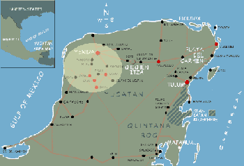

Mérida |
 |
26-Sept-00: Hotel Caribe "San Francisco? Ah, cerca Redwood City!" --Young man in souvenir shop. ***
*** Kabah: bats, flapping around Michael's head. A platform with one row of glyphs, all that remains of a two-room building, a book in architectural form. Sr. Bustillos takes a ballpoint pen and draws the Maya glyph for infinity on his hand, explaining to us how sophisticated this culture's mathematics were. Labná: the arch, the disorganized piles of stones nearby, the sacbe, the Mirador. Sr. Bustillos sighing that twenty years ago the site was in better shape: there was even statuary on the now-desolate Mirador. The arch exerting power over my eyes-- I look at it again and again. Sayil: several piles of stones shaded by jungle trees, and one building reconstructed. Image of the Descending God, born naked and headfirst. I am looking for traces of paint when I hear sounds familiar to me only from Martin Denny albums-- two or three tropical birds challenging each other. Sighting of a mot-mot, turquoise and yellow, on a limb above the caretaker's turkeys, these lean birds high-stepping around the mimosas. |